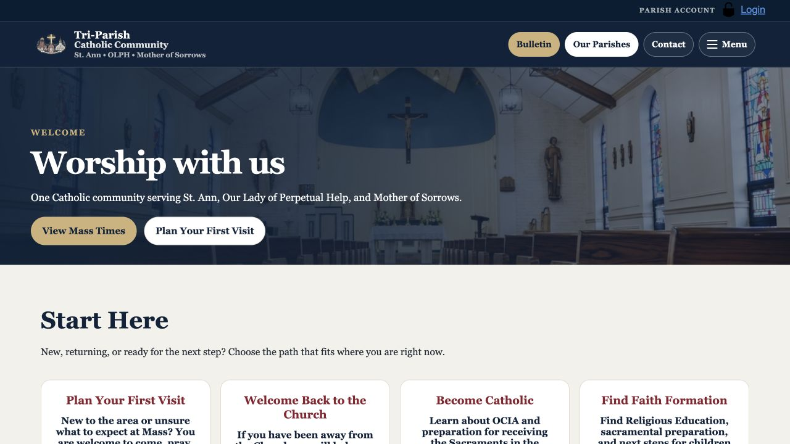

Serving a shared community
The site needed to serve new visitors, parishioners, families, and ministry participants across three Catholic parishes. People needed to find information without first understanding how the parishes were organized.

Launched community project
I led the Tri-Parish website from audience planning through public launch, with responsibility for content, design direction, technical coordination, and stakeholder support.

The site needed to serve new visitors, parishioners, families, and ministry participants across three Catholic parishes. People needed to find information without first understanding how the parishes were organized.
I planned the project, organized the site and content, wrote copy, directed the design, and coordinated review and launch. I used AI to assist development and workflow tasks while retaining responsibility for the decisions and finished work.
I grouped the content around what people came to do: find Mass and confession times, learn about the parishes, read bulletins, and access events, forms, giving information, or support. New-visitor pathways and welcoming copy helped people find a starting point.
Consistent page patterns, readable text, mobile layouts, and accessibility review guided the design. The information structure also needed to support future maintenance.
I coordinated GitHub Pages setup and the domain, organized the site files, and supported stakeholder review. Before launch, I checked links and page flow and reviewed how visitors would reach essential information.
The community now has a public site with direct routes to essential parish information. Replacing recurring website spending saved the church several hundred dollars per year.